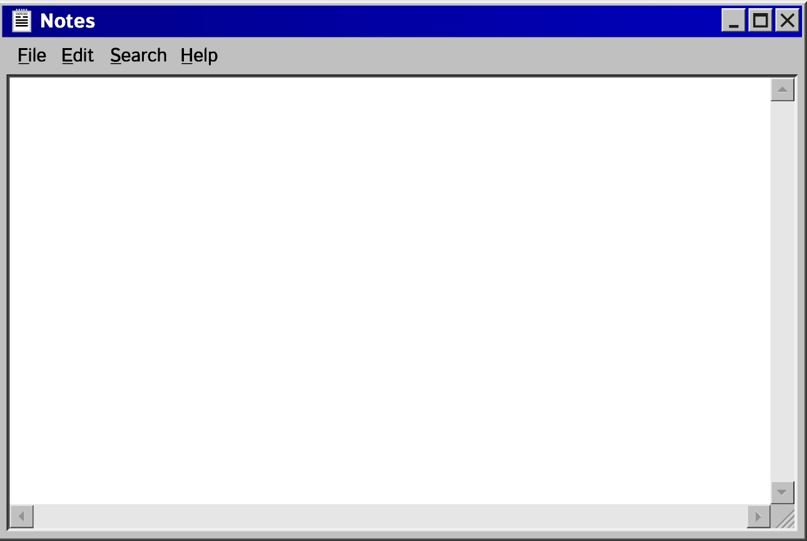
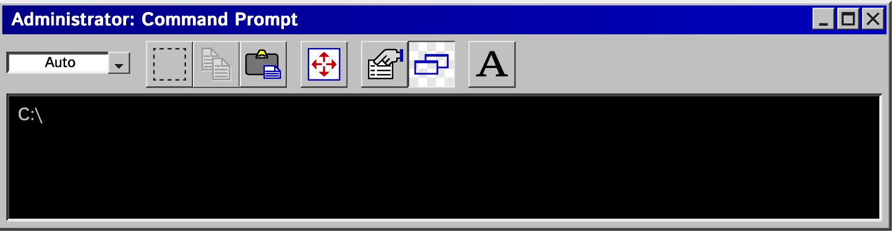
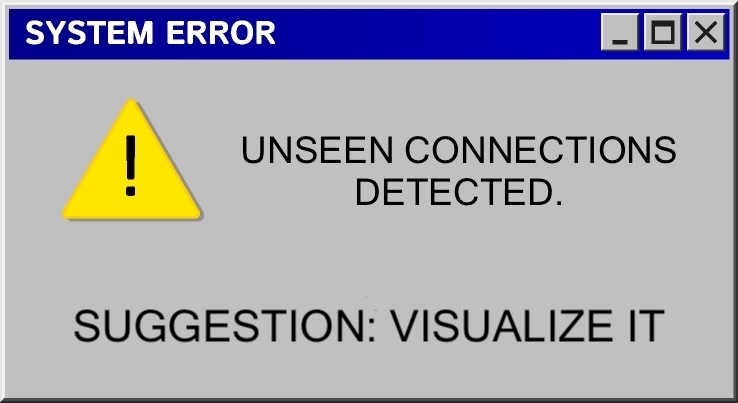
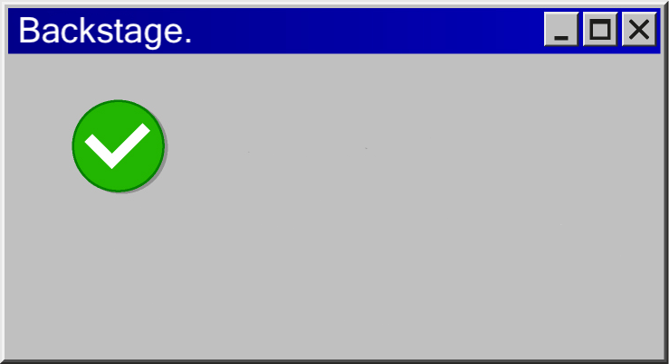

This project maps the hidden structure of the film industry.
Each node represents a person or a production: directors,
writers, studios.
Edges show collaborations across movies, decades, and genres.
It’s not just a database - it’s a backstage pass to how cinema
actually connects.


> loading data from TMDB...
> extracting relationships...
> building graph...
> network ready.


Do you want to enter the Backstage Network ?